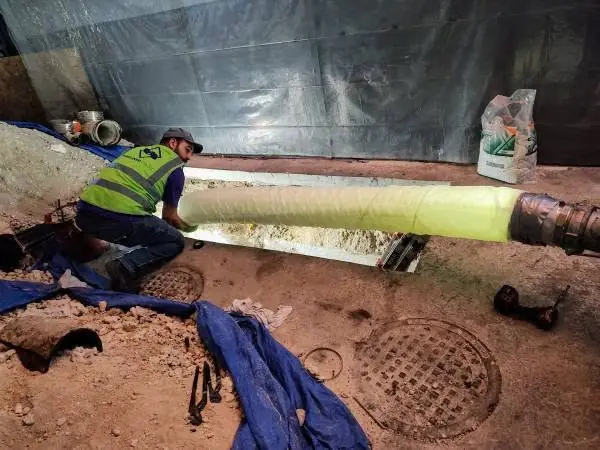

Crawl Space Mold Inspection in Burien
Many Burien homes sit over crawl spaces that stay damp through the wet season. A crawl space mold inspection in Burien checks the framing, subfloor, vapor barrier and ventilation, and finds what's feeding any growth.

Crawl space moisture and mold: what the inspection covers
A crawl space mold inspection is a focused investigation of the space between the ground and the first floor of a raised-foundation home. The inspector enters the crawl space, examines the floor joists, beams, sill plates and subfloor for growth and decay, measures moisture in the wood, and evaluates the conditions that control dampness: the ground cover, drainage, ventilation and any plumbing or ductwork running through the space.
This matters because the crawl space is part of your home's air system. As warm air rises and leaves through the upper floors, replacement air is pulled up from below. Whatever is in the crawl space, including humidity, odor and spores, can reach your living space. That's why crawl space checks are one of the most requested types of home mold testing in Burien.
How a Burien crawl space mold inspection company tests your home
Crawl space inspections are physical work. The inspector suits up, enters through the access hatch and moves through as much of the space as can be safely reached.
- Wood moisture readings. Pin meters measure moisture content in joists, beams and subfloor. Wood that stays wet over time supports mold and, eventually, decay fungi.
- Visual survey. Inspectors look for white, gray, green or black growth on framing, often heaviest on the north side or near the coldest walls, plus efflorescence on concrete, staining and sagging insulation.
- Humidity and temperature. Readings in the crawl space are compared with the rooms above to see how much moisture is coming from below.
- Ground cover check. The vapor barrier is inspected for coverage, tears, gaps, standing water on top and areas of bare soil.
- Ventilation and drainage. Foundation vents are checked for blockage, and signs of standing water, poor grading or gutter discharge near the foundation are noted.
- Systems. Ducts, plumbing drains and supply lines are checked for leaks and disconnected sections.
Samples may be taken from framing if identification is useful, or air may be sampled in the crawl space and in the rooms above to see whether the two are connected. Combining this with indoor air quality testing helps when odors show up upstairs.
Signs you should book crawl space mold inspection near you
- Musty smell on the main floor. Odor that's strongest at floor level or near registers often comes from below.
- Cold, damp floors. Floors that feel clammy in winter can indicate high moisture in the crawl space.
- Sagging or bouncy floors. Soft spots may signal wet or decaying joists and subfloor.
- Insulation hanging down. Batts fall when they absorb moisture and get heavy.
- Standing water after rain. Puddles on or under the vapor barrier mean drainage is failing.
- Fuzzy growth on joists. White or gray fuzz on framing is often mold, especially on cooler sides.
- Rust on metal fasteners. Corroded nails, straps and duct hangers show long-term humidity.
- Pests in the crawl space. Insects and rodents are drawn to damp conditions and damage barriers.
What causes the problems crawl space mold inspection uncovers?
The ground is the biggest moisture source in most crawl spaces. Bare soil releases water vapor continuously, and in Burien's wet season the soil stays saturated for months. A missing, torn or poorly lapped vapor barrier lets that moisture rise straight into the wood above.
Drainage is second. Downspouts that dump next to the foundation, soil that slopes toward the house, and clogged perimeter drains send rainwater under the house. Ventilation is the third factor. Traditional foundation vents are meant to let moisture out, but when they're blocked by soil, plants or storage, or when outside air is already humid, they don't dry the space well. Leaking drain lines, disconnected dryer vents and ductwork add more moisture.
Older raised-foundation homes in Boulevard Park and Gregory Heights are frequent cases.
What can you check yourself first?
- Walk the outside of the house during rain. Check that downspouts discharge well away from the foundation and that soil slopes away.
- Make sure foundation vents aren't covered by soil, bark, plants or stored items.
- Shine a flashlight through the access hatch without going in. Look for standing water, hanging insulation and a missing vapor barrier.
- Check that your dryer vent exits outside rather than into the crawl space.
WarningCrawl spaces can contain mold, sharp debris, pests, old insulation and exposed wiring. Leave full entry to someone with protective equipment and training.
What to expect when you hire a crawl space mold inspection company
- Exterior check. Grading, gutters, downspouts and foundation vents are reviewed.
- Interior clues. Floors above are checked for odor, softness and register smells.
- Entry. The inspector enters wearing protective gear and moves through accessible areas.
- Moisture and growth survey. Framing and subfloor are read with meters and examined for growth.
- Barrier and systems. Vapor barrier, insulation, ducts and plumbing are inspected.
- Sampling if needed. Surface or air samples are taken where identification or comparison helps.
- Report. Photos of conditions under the house, readings, causes and recommendations.
Crawl Space Mold Inspection cost in Burien: what affects the price?
Providers set their own prices for crawl space mold inspection in Burien. These are the factors that shape a quote.
| Factor | Effect on the crawl space mold inspection quote |
|---|---|
| Crawl space size | Larger footprints take longer to survey. |
| Clearance height | Very low or obstructed spaces slow access. |
| Sampling | Lab samples add to the base inspection. |
| Whole-home add-on | Combining with a full-house inspection changes scope. |
When do you need emergency crawl space mold inspection?
Call promptly if the crawl space has standing water after a plumbing failure, if a sewer or drain line has broken under the house, or if floors are sagging noticeably. Sewage contamination requires professional cleanup. For a broken supply line, shut off the main water valve first. Standing water under the house spreads moisture into framing quickly and should be removed and dried as soon as possible.
How are crawl space moisture problems usually fixed?
An inspection report will point to the main moisture sources, and fixes follow from those. Most corrections fall into a few categories, and they are often combined.
- Ground cover. Installing or replacing a continuous polyethylene vapor barrier, lapped at the seams and run up the foundation walls, cuts off the largest moisture source.
- Exterior drainage. Extending downspouts, regrading soil to slope away from the house, and clearing or adding perimeter drains keeps rainwater out from under the floor.
- Ventilation or encapsulation. Some homes do well with clear, functioning foundation vents. Others benefit from encapsulation, which seals the space and controls humidity with a dehumidifier or conditioned air.
- Repairs. Leaking drain lines, disconnected ducts and dryer vents are fixed, and damaged insulation is removed.
- Cleaning growth. Framing with surface mold is cleaned or treated by a remediation contractor once the moisture source is under control.
An independent inspector can explain which corrections address your specific findings, which is useful when you're comparing contractor proposals that range from a simple barrier replacement to full encapsulation.
How to hire the best crawl space mold inspection company in Burien
Crawl space mold inspection companies in Burien range from independent inspectors to encapsulation contractors who sell the fix. Both can help, but the clearest answer comes from someone whose report doesn't depend on selling you a system.
- Are your inspectors certified, and by which organization?
- Which accredited lab analyzes your samples?
- Do you also perform mold remediation?
- What does the written report include, and when do I get it?
- Is pricing flat, or based on square footage and samples?
- How soon can you schedule a visit in Burien?
Credentials, insurance and pricing belong to each independent provider, so confirm them directly before booking crawl space mold inspection. One call to (833) 289-9993 connects you with a local crawl space mold inspection provider you can put these questions to.
Crawl Space Mold Inspection FAQs for Burien homeowners
Is some mold in a crawl space normal?
Light growth is common in damp crawl spaces, but it isn't harmless. It signals moisture that can lead to decay and affects air in the home.
Does a vapor barrier stop mold?
A properly installed barrier greatly reduces ground moisture, which is the biggest source. Drainage and ventilation still matter.
Should I close my foundation vents?
Not without a plan. Closing vents is part of crawl space encapsulation, which also involves sealing and moisture control. Ask the inspector what's right for your home.
Can crawl space mold affect my health?
Air moves from the crawl space into living areas, so spores and odor can reach you. That's why some inspections include air sampling upstairs.
Do I need to be home?
Yes, for access and to discuss findings. Make sure the hatch is clear and reachable.
Will the report include photos?
Most inspectors document conditions with photos, since few homeowners want to see the crawl space in person.
Ready to book crawl space mold inspection in Burien?
Call and get connected with an independent provider who handles crawl space mold inspection for Burien homes.
(833) 289-9993Free call. No obligation to book.